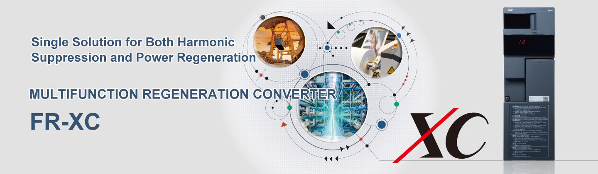
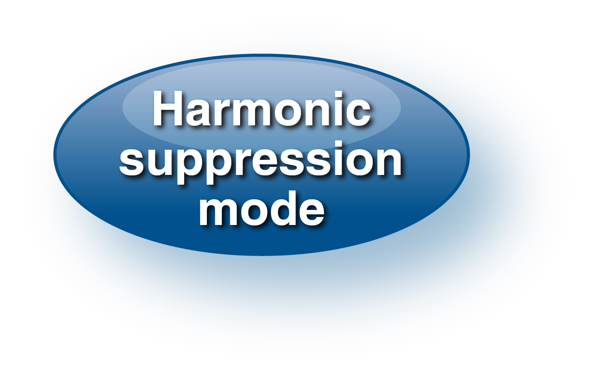
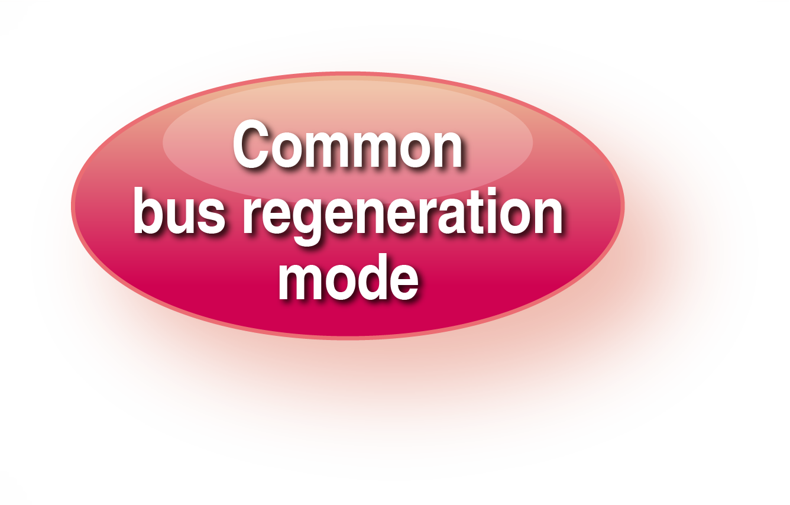
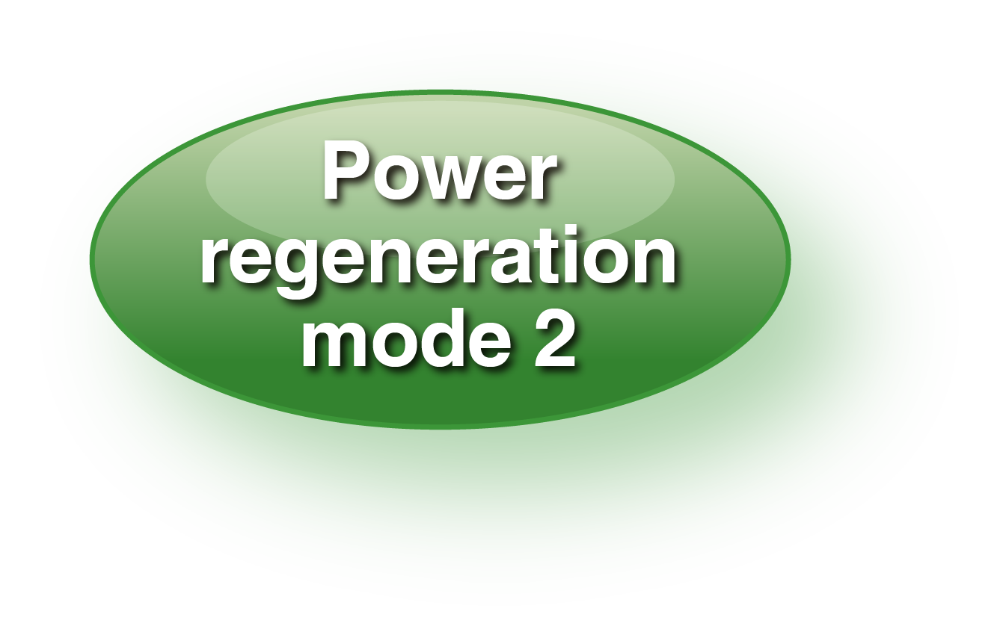
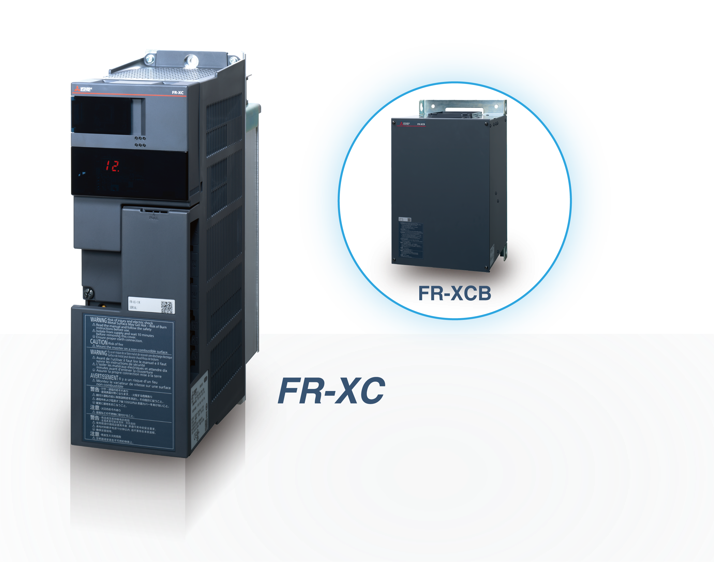
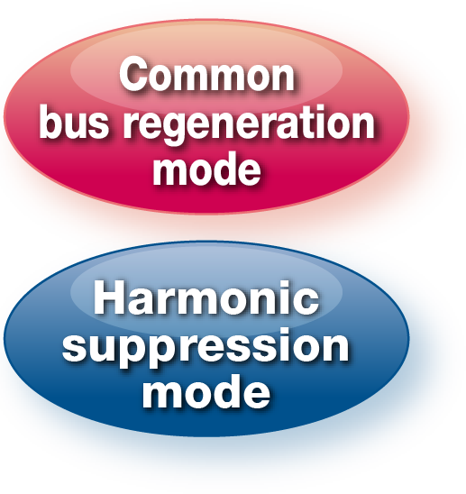
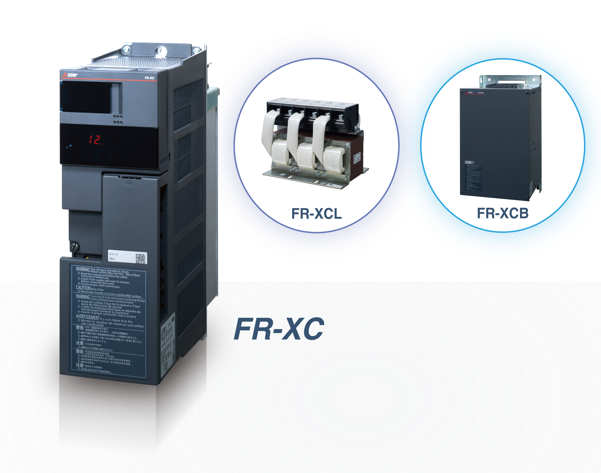
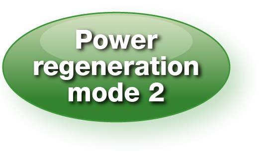
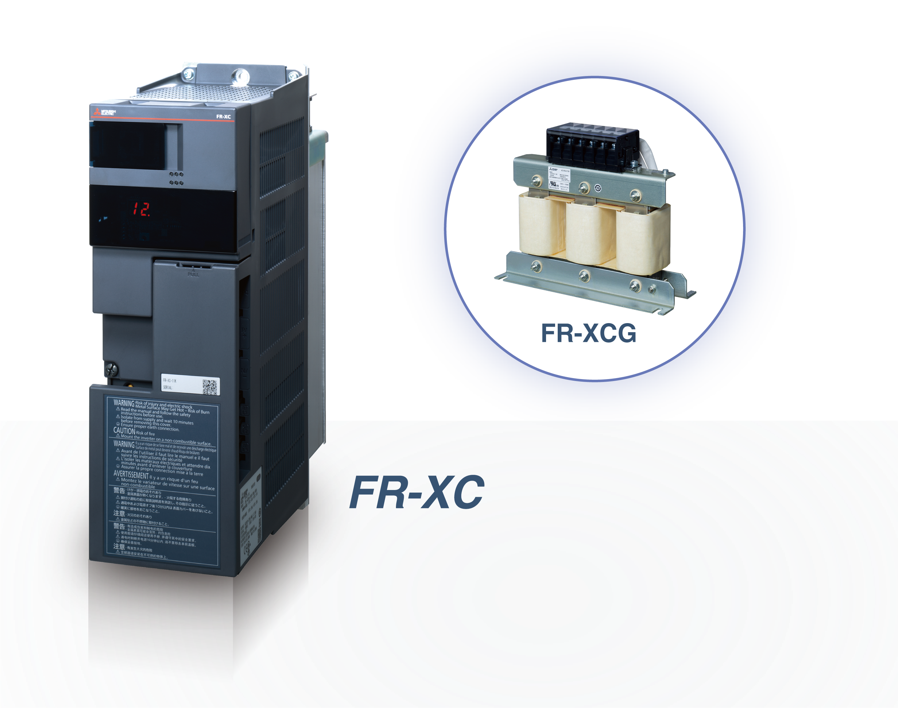

Inverters-FREQROL-XC Series Outline


Choose the suitable function for your needs by using the FR-XC converter with the FR-XCB, FR-XCL, or FR-XCG reactor.

|  |  |  | |
|---|---|---|---|
| Energy saving by power regeneration |
|||
| Power supply harmonic current suppression |
─ | ─ | |
| Reduction in the power supply capacity or the facility size by power factor improvement |
─ | ||
| Use as a common converter | ─ | ||
| Initial cost reduction | |||
| Less wiring work | |||
| Smaller enclosure size |
: Highly effective : Moderately effective : Slightly effective ─: N/A
Compact design offering solution to harmonic problems
Harmonic suppression (K5 = 0) achieved
Power supply capacity reduced by power
factor improvement

Power regeneration contributing to energy saving

Total cost reduction by connecting up to 10 inverters


Space saving achievable depending on the regenerative power
